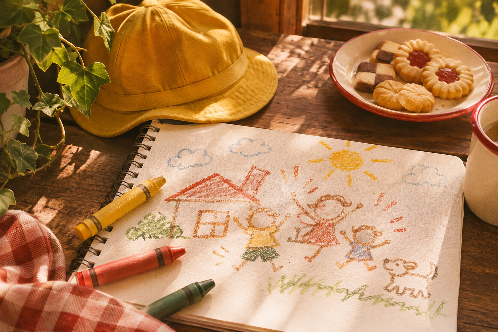

수업을 위해 만든 가상 인물이에요
안녕하세요,
훈댕이에요!
재미있는 이야기와 유쾌한 웃음을 좋아하는 30대 교육생입니다. 우리 함께 편안하고 즐겁게 배워요!
제가 좋아하는 것 3가지
-
침착맨
편안한 말투와 예상하지 못한 엉뚱한 이야기를 들으며 웃는 것을 좋아해요.
-
일본 만화
새로운 세계와 개성 있는 인물을 만나는 재미 때문에 자주 찾아봐요.
-

짱구장난기 가득한 일상 속에서도 따뜻한 가족 이야기가 담겨 있어 좋아해요.
또 하나의 취향
술에 담긴 다양한 맛과 이야기를 알아가는 것도 좋아해요. 정기 구독으로 새로운 종류를 하나씩 만나며 천천히 취향을 넓히고 있어요.
🍳 요리 수첩 속 한 줄
재료를 다듬고 새로운 맛을 만들어 가는 요리하는 시간을 좋아해요. 직접 만든 음식은 물론, 맛있는 음식을 찾아 천천히 즐기는 것도 큰 행복이에요.
도쿄에서 보낸 시간
대학생 때 시작된 일본 생활은 취업 경험으로 이어졌어요. 도쿄에서 약 4년을 지내며 새로운 환경에 적응하는 힘을 길렀습니다.
-
대학생 시절
일본으로 교환학생을 다녀오며 현지 생활을 처음 경험했어요.
-
일본 직장 생활 2년
일본에서 취업해 동료들과 일하며 다양한 업무 문화를 배웠어요.
-
도쿄 거주 약 4년
공부와 직장 생활을 포함해 도쿄에서 모두 약 4년을 살았어요.
좋아하는 만화가 있다면 먼저 말 걸어 주세요! 👋